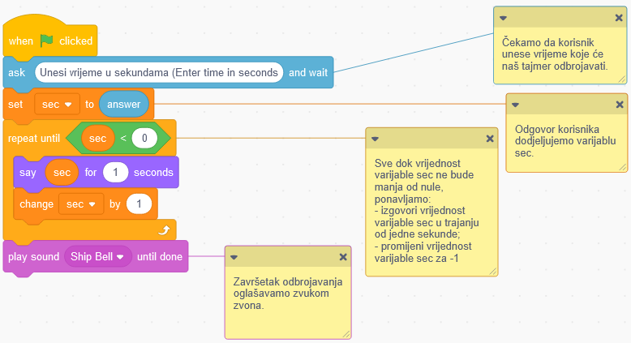

Ponavljanje¶
Već smo spomenuli da je ponavljanje jedne ili više naredbi (blokova) moćan koncept u programiranju. Kad se neke naredbe u programu izvršavaju više puta, kažemo da program sadrži petlje. Prije smo koristili ovaj koncept nekoliko puta.
U programu Scratch imamo 3 vrste blokova koji ponavljaju naredbe:
Blok koji ponavlja naredbe određeni broj puta;
Blok koji ponavlja naredbe beskonačan broj puta;
Blok koji ponavlja naredbe dok se ne ispuni određeni uvjet.
Umetnit ćemo blokove koje trebamo ponoviti u jedan od tih blokova.
Blok koji ponavlja naredbe određeni broj puta¶

Koristili smo blok koji ponavlja naredbe određeni broj puta u projektu Farm (više informacija možete pronaći u lekciji Izgled (Looks)).
Lik pileta u programu simulirao je pokrete kljucanja mijenjajući kostime a, b i c 10 puta. Nakon ove simulacije, pile se povećao u veličini za 10. Naš cilj je bio povećati veličinu lika pile za 50, pa smo ponovili dio koda koji je povećao veličinu lika 5 puta. Da bismo postigli željeno ponašanje, koristili smo blokove  i
i  .
.
Na donjoj slici skratili smo dio skripte koji se odnosi na ponavljanje naredbi i napravili smo isti program, ali ovaj put bez korištenja blokova ponavljanja. Scenarij koji smo dobili bio je zaista dugačak, pa smo ga zbog jasnoće morali podijeliti u pet stupaca.

 Stvorite program Farm bez upotrebe blokova za ponavljanje. Usporedite svoj kod s našim. Vjerujemo da možete vidjeti kako slaganje identičnih skupina blokova čini program duljim, teškim za razumijevanje i nadogradnju.
Stvorite program Farm bez upotrebe blokova za ponavljanje. Usporedite svoj kod s našim. Vjerujemo da možete vidjeti kako slaganje identičnih skupina blokova čini program duljim, teškim za razumijevanje i nadogradnju.
Blok koji ponavlja naredbe beskonačno broj puta¶

Ovaj blok za ponavljanje naredbi radi beskonačan broj puta. Izvođenje ovog bloka nikada se ne zaustavlja samostalno. Moramo ga zaustaviti klikom na gumb koji zaustavlja program (crveni gumb pored zelene zastave) ili upotrebom jednog od sljedećih blokova  /
/  /
/  , iz kategorije Upravljanje (Control).
, iz kategorije Upravljanje (Control).
Koristili smo blok koji ponavlja naredbe neograničen broj puta u projektu Mačka lovi miša (više informacija možete pronaći u lekciji Kretanje (Motion)).
Blok koji ponavlja naredbe dok se ne ispuni određeni uvjet¶

Ovaj blok za ponavljanje naredbi traje sve dok se ne ispuni određeni uvjet. Skripte unutar ovog bloka izvršavaju se na temelju testa koji određuje je li uvjet postavljen u blok istinit ili ne. Ovaj blok koristimo kada ne znamo koliko puta moramo ponoviti naredbe unutar bloka za ponavljanje, i stoga želimo da se oni izvode dok se neki uvjet ne ispuni.
Pokazat ćemo kako djeluje blok koji ponavlja naredbe dok se ne ispuni određeni uvjet - stvorit ćemo program koji funkcionira kao tajmer, tj. odbrojava sekunde od unesene vrijednosti do nule.
Za ovaj program stvorit ćemo varijablu  , koji će pohraniti vrijednost preostalih sekundi dok brojač odbrojava. Zamolit ćemo korisnika da unese određeni broj sekundi. Tada ćemo započeti odbrojavanje. Po isteku unesenog vremena, čut ćemo zvučni signal.
, koji će pohraniti vrijednost preostalih sekundi dok brojač odbrojava. Zamolit ćemo korisnika da unese određeni broj sekundi. Tada ćemo započeti odbrojavanje. Po isteku unesenog vremena, čut ćemo zvučni signal.
Donja slika sadrži naš prijedlog koda programa s komentarima, koji služe kao objašnjenje. Programerima je korisno komentirati skripte i objasniti što određeni blokovi rade. Komentiranje olakšava drugim programerima razumijevanje i nadogradnju programa koje stvaramo. Komentar možete dodati klikom desne tipke miša na skriptu i odabirom opcije Dodaj komentar (Add comment).
 Program Timer možete pronaći na linku https://scratch.mit.edu/projects/326420353. Nadogradite ga dodavanjem zvuka koji otkucava sat, a koji će se čuti kako brojač odbrojava.